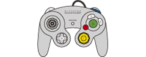

3 |
Vorbereitung des Controllers |
 |
Die jeweilige Handhabung des Controllers hängt davon ab, ob Sie die Wii-Fernbedienung allein oder in Kombination mit anderem Wii-Zubehör verwenden.
Hinweis: Nähere Informationen über das Befestigen der Handgelenksschlaufe und das Anschließen jeweiligen Zubehörs finden Sie in der Wii-Bedienungsanleitung – Vorbereitung des Systems oder in der Bedienungsanleitung des entsprechenden Controllers. 
Verwendung mit dem Nunchuk™

Auch der Nintendo GameCube™ Controller
Befinden sich Tasten oder Sticks eines Nunchuks, Classic Controllers oder Nintendo GameCube Controllers beim Einschalten nicht in der neutralen Position (*) und verursachen deshalb Fehlfunktionen, unternehmen Sie bitte Folgendes:
* “Neutrale Position” bedeutet, dass weder Sticks noch Tasten berührt werden. Sollten sich Sticks oder Tasten beim Einschalten der Wii-Konsole nicht in der neutralen Position befinden, so wird diese falsche Position als neutrale Position übernommen, was zu Fehlfunktionen der einzelnen Bedienelemente eines Controllers führt.
|


 ,
,  ,
,  und
und  auf der angeschlossenen Wii-Fernbedienung gedrückt.
auf der angeschlossenen Wii-Fernbedienung gedrückt.

 |
 |
 |